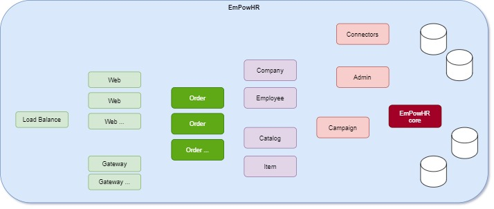

Introduction
For our tutorial, we are going to design and create a “proof of concept” (POC) software system for a fictitious company named "EmpowHR" (meaning "empower
Employee HR").
Here is a list of icons that we will use:
Whiteboard: capture ideas.
 BizRule: mark business requirements (rules) for the application that we are building.
BizRule: mark business requirements (rules) for the application that we are building.
Review: used to recap what we just did before moving forward.
 CheckPoint: allow you to get caught up with the latest Model changes and sample data from a github project.
CheckPoint: allow you to get caught up with the latest Model changes and sample data from a github project.
 ReGen & Run: use OABuilder code generator to regenerate the application, and then run.
ReGen & Run: use OABuilder code generator to regenerate the application, and then run.
 Discuss & Learn: take time to explain some important concepts and technical details about how the system works.
Discuss & Learn: take time to explain some important concepts and technical details about how the system works.
Continue working on the Model: after a discussion.
To do item.
to do item: Show the screen shots of final App here.
Along the way, we will give extra details on how to use OABuilder, generate the code, and run the application.
This POC will allow the employees of our customers to earn points. The points are then used to purchase items from a list of choices specific to the type of award
and the company offering the reward.
The customers are companies that have hired EmpowHR to manage their employee award campaigns.
The name of our platform will be "empowhr", and will need to be highly configurable, so that the customers are able to create a dynamic experience and tune it to
match their company preferences.
Our goal is to be able to build a single platform, that can run as a distributed platform. This means that we want our software to be able to scale and run
hundreds of company campaigns, with over a million users, and expect an average of 500 users at a time, with spikes over 5k users.
For our Proof of Concepts, we will deliver:
- Object Model
- Class diagram for model.
- Database Scheme
- a working application with Desktop UI
- REST API
- Web Server
- Security
- Options to run as Server/Web Server/Clients/Single/CLI/Webservice/etc
- Various UI applications, based on type of user.
The production platform would look something like this. Locally, we will be able run as a single user instance, or as distributed as we want - clients/server,
microservices, etc.
